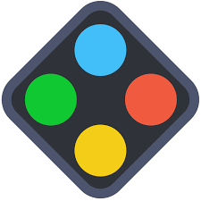
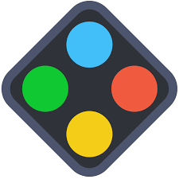
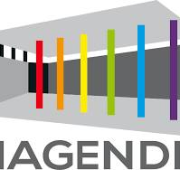

Présentation
Je suis Edgar Pullès, étudiant à Junia Bordeaux en CIR, j'aime programmer différents projets comme un Bot Discord ou un OS (Aller voir la page Projets), je suis Fan de Renards, du Petit Prince d'Antoine de Saint-Exupéry, de musique, de programmation et d'éléctronique.
Je vous présente mon Portfolio dans lequel vous trouverez mes projets, mes compétences, mon parcours et mes différents contacts.
Compétences
Je maîtrise les langages HTML5  ,CSS3
,CSS3  et Python .
et Python .
J'ai des connaissances en JavaScript  et en C
et en C  .
.
J'utilise les logiciels Github  , VS Code
, VS Code  , Gimp
, Gimp  , Canva
, Canva  , ChibiEditor
, ChibiEditor  , OBS , DaVinci Resolve
, OBS , DaVinci Resolve  , Studio 2.0 , MCreator
, Studio 2.0 , MCreator  , Discord
, Discord  , EV3 ClassRoom
, EV3 ClassRoom  .
.
Je parle le Français (langue natale)  , l'Anglais (LV1)
, l'Anglais (LV1)  et le Chinois (LV1)
et le Chinois (LV1)  .
.
Parcours
Prépa Intégrée à Junia Bordeaux en CIR (Cycle Informatique et Réseaux). 
Lycée François Magendie à Bordeaux en Section Linguistique Orientale Chinois et DNL EPS TaiChi. 
Collège Fransisco Goya à Bordeaux en Section Internationale Chinois LV1 et Anglais LV1. 
Mon CV
Pour un aperçu complet de mon profil, de mes expériences et de mes compétences, n'hésitez pas à aller voir et télécharger mon CV qui est disponible au format PDF.